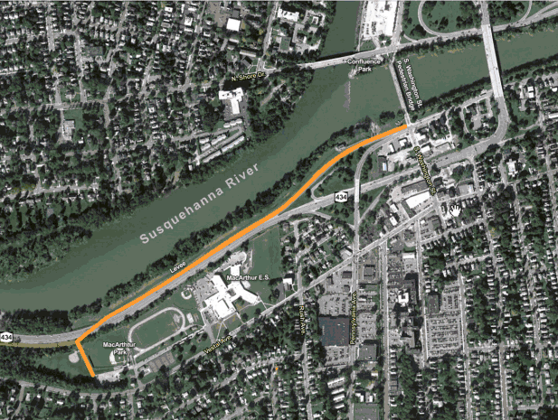
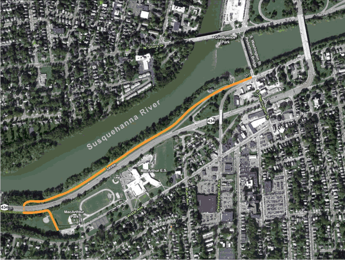
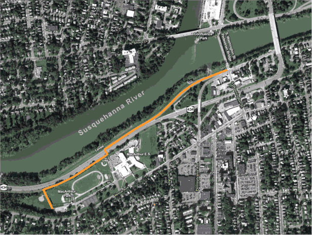
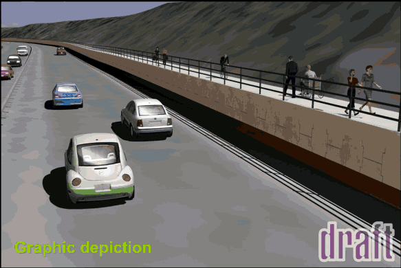
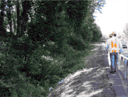
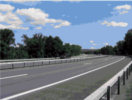
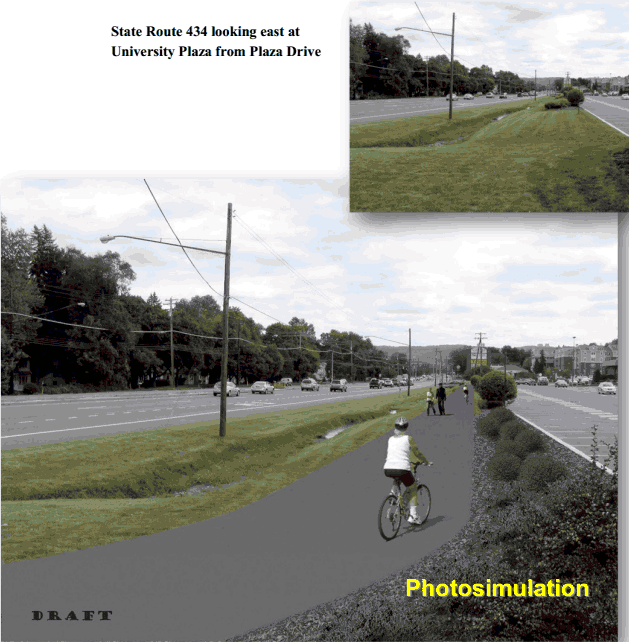

What is the purpose of the Greenway?
There are inadequate pedestrian and bicycle accomodations within the proposed project limits. This could be solved by the building of the Greater Binghamton Greenway. The objectives of this project segment include the following:
- Provide pedestrian and bicycle communter access
- Provide safe, accessible pedestrian and bicycle accomodations between Binghamton University, University Plaza, and Downtown Binghamton
- Provide recreational opportunities for residents and visitors in the project area
What is the scope of the project?
This projects consists of three segments:
- South Washington Street to MacArthur Park and School
- MacArthur Park and School to Clubhouse Road
- Clubhouse Road to Binghamton University
There are 3 options for this section of the Greenway
Overpass |
This option proposes an overpass that will allow the Greenway to proceed over Vestal Parkway | ||||||||||||
|  |
|
||||||||||||
| Overall Estimate:$2.75 million |
| This option proposes an underpass that will allow the Greenway to pass under Vestal Parkway. | Underpass |
||||||||||||
|
 | ||||||||||||
Overall Estimate: $1.1million |
| At Grade | This option proposes an at grade road crossing for the Greenway to cross State Route 434 | ||||||||||||
|  |
|
||||||||||||
| Overall Estimate: $0.8 million |

This section will consist of a trail that proceeds west along the eastbound lane of Vestal Parkway.
Overall Estimate: $3.85 Million


>>>>>>> 9784e6f797b34ac28254dfee7badb49bfe0930a2

This part of the trail will continue along the eastbound lane of Vestal Parkway passing by University Plaza and ending at Binghamton University.
Overall Estimate: $1.00 Million